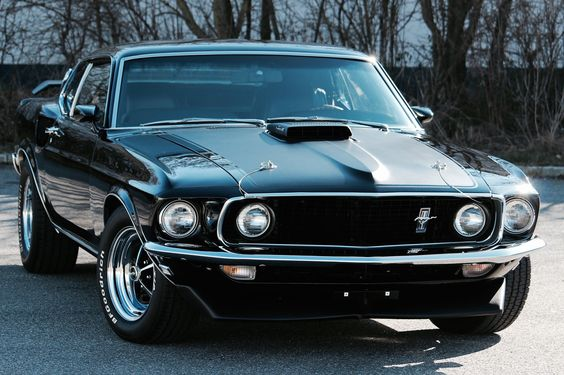
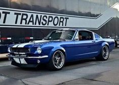
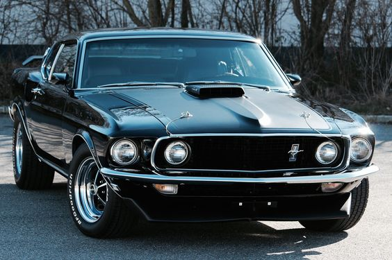
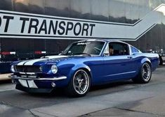

Overview
 



The 1969 Ford Mustang was an iconic car that represented the peak of the muscle car era. It was known for its powerful performance, distinctive design, and cultural significance.
This classic car featured various engine options, including the 302 cubic inch V8 and the potent Boss 429 engine. Its sleek and aggressive exterior design made it a standout on the streets, capturing the hearts of car enthusiasts.
With its high-performance capabilities and stylish appearance, the 1969 Ford Mustang remains a highly sought-after and cherished classic car among collectors and fans.